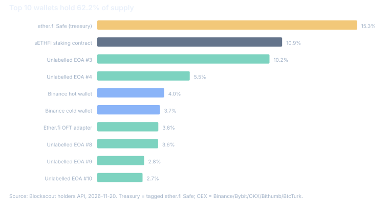
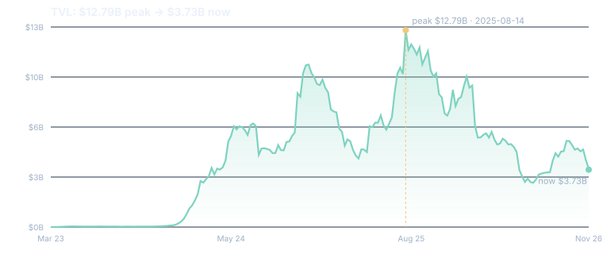
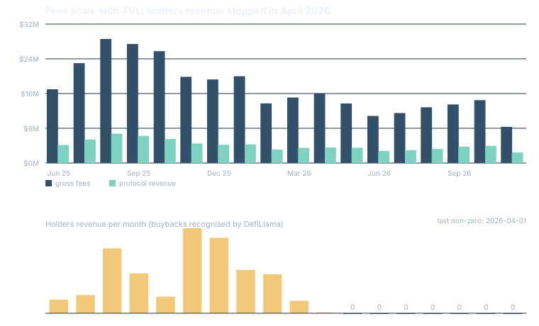
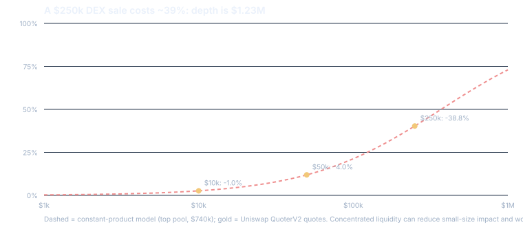

1. Вопрос: платит ли протокол держателям?
1. The question: does the protocol pay its holders?
ETHFI — не акция и не долг. У токена нет юридического права на выручку ether.fi. Есть governance и заявленная политика распределения: 40% revenue идёт на расходы Labs, 30% — на buyback в Foundation treasury, 30% — на cashback пользователям. Fee switch включён.
ETHFI is not equity and not debt. The token has no legal claim on ether.fi revenue. It has governance and a stated distribution policy: 40% of revenue to Labs expenses, 30% to buybacks held in the Foundation treasury, 30% to user cashback. The fee switch is on.
Из этого следуют три разных вопроса, которые постоянно смешивают:
That creates three different questions that are constantly conflated:
Протокол покупает токен на рынке. Это поддержка цены, но не выплата.
The protocol buys the token on the market. That supports price; it is not a payout.
Токен уничтожается, supply падает. Этого здесь нет.
The token is destroyed and supply falls. That is not happening here.
Держатель получает деньги или токены. Именно это надо доказать.
The holder receives cash or tokens. That is the claim to prove.
Мой вопрос к данным: доходит ли buyback до держателя, или он остаётся внутри структур протокола? Ответ меняет тип актива: «токен с работающим bid» и «токен с реальным yield» — разные инвестиции с разной оценкой.
My data question: does the buyback reach the holder, or does it stay inside the protocol’s structures? The answer changes the asset type: “a token with a working bid” and “a token with real yield” are different investments with different valuations.
Короткий ответ. Покупка реальна: 566 сделок, 2.54M ETHFI, $1.65M. Выплата — нет: ни один ETHFI с buyback Safe не ушёл в sETHFI, holder revenue равен нулю с 1 апреля 2026. Токены уходят на EOA и в LayerZero для кэшбэка на Optimism. Это не то же самое, что yield держателям Ethereum.
Short answer. The purchase is real: 566 trades, 2.54M ETHFI, $1.65M. The payout is not: no ETHFI left the buyback Safe for sETHFI, and holder revenue has been zero since 1 April 2026. Tokens route to an EOA and to LayerZero for cashback on Optimism. That is not the same as yield to Ethereum holders.
2. Что на самом деле делает протокол
2. What the protocol actually does
ether.fi — ликвидный рестейкинг и стейкинг ETH. Держатель получает ликвидный токен (eETH/weETH), протокол берёт комиссию с rewards и restaking-доходности. TVL на 20 ноября — $3.73B: стейкинг $3.34B, liquid-часть $284M и остальное на других сетях и продуктах.
ether.fi is liquid restaking and ETH staking. The depositor receives a liquid token (eETH/weETH); the protocol takes a fee on rewards and restaking yield. TVL on 20 November was $3.73B: $3.34B staking, $284M liquid, and the rest on other chains and products.
Выручка протокола — это не весь объём комиссий. Часть уходит валидаторам и партнёрам, часть — на расходы. Поэтому корректная цепочка выглядит так:
Protocol revenue is not gross fees. Part goes to validators and partners, part to expenses. The correct chain is:
| ПоказательMetric | 30d | 365d | КомментарийComment |
|---|---|---|---|
| Gross fees | $13,621,953 | $178,083,989 | комиссии, не выручкаfees, not revenue |
| Protocol revenue | $3,824,601 | $43,391,303 | 28.1% от fees за 30d28.1% of 30d fees |
| Holders revenue | $0 | $6,549,981 | последнее начисление — 01.04.2026last distribution — 1 Apr 2026 |
| Cumulative revenue | $110,191,116 | — | с начала историиsince inception |
| Cumulative holders revenue | $16,591,119 | — | 15.06% от revenue15.06% of revenue |
Источник: DefiLlama dailyFees / dailyRevenue / dailyHoldersRevenue, срез 20.11.2026. Holders revenue — то, что агрегатор считает распределением держателям; за 30 и 90 дней значение нулевое.
Source: DefiLlama dailyFees / dailyRevenue / dailyHoldersRevenue, snapshot 20 Nov 2026. Holders revenue is what the aggregator treats as distribution to holders; it is zero over 30 and 90 days.
Ключевое различие. $13.6M fees — это оборот комиссий. $3.8M revenue — то, что осталось протоколу. $0 holder revenue — то, что дошло до держателя. Для оценки токена имеет значение только третья строка.
The key distinction. $13.6M fees is commission turnover. $3.8M revenue is what the protocol kept. $0 holder revenue is what reached the holder. Only the third line matters for token valuation.
3. Три числа предложения — и одно расхождение
3. Three supply numbers — and one conflict
Первое, что ломается в токеномике, — «circulating supply». Для ETHFI три источника дают три разные базы:
The first thing that breaks in tokenomics is “circulating supply”. For ETHFI, three sources give three different bases:
| ИсточникSource | Circ.Circ. | LockedLocked | TotalTotal | СтатусStatus |
|---|---|---|---|---|
| On-chain totalSupply | 998,535,999 | — | 998,535,999 | RPC, провереноRPC, verified |
| CoinGecko | 998,535,999 | 0 | 998,535,999 | circ = totalcirc = total |
| DefiLlama unlocks | 983,600,557 | 16,399,443 | 1,000,000,000 | другая базаdifferent base |
| Docs / max supply | — | — | 1,000,000,000 | жёсткий потолокhard cap |
Все значения — ETHFI. On-chain: totalSupply() на контракте 0xFe0c…c0eB, block на 20.11.2026. DefiLlama: страница unlocks. CoinGecko: /coins/ether-fi.
All values in ETHFI. On-chain: totalSupply() on 0xFe0c…c0eB, block on 20 Nov 2026. DefiLlama: unlocks page. CoinGecko: /coins/ether-fi.
On-chain supply — 998,535,999 ETHFI, а не 1 млрд. Разница 1,464,001 ETHFI сожжена через функцию burn(): баланс нулевого адреса равен нулю, на dead-адресе — 0.6696 ETHFI. Это не «сожгли на адрес», это уменьшение totalSupply.
On-chain supply is 998,535,999 ETHFI, not 1B. The 1,464,001 ETHFI difference was burned via burn(): the zero address balance is zero, the dead address holds 0.6696 ETHFI. This is a reduction of totalSupply, not a send to a burn address.
Практический вывод: если DefiLlama прав, CoinGecko завышает float на 14.9M ETHFI (1.5% supply) и market cap примерно на $7M. Для позиции это не критично; для расчёта overhang и разводнения — критично. Я беру on-chain supply как базу и отдельно показываю locked 16.4M как риск, а не как «уже в обращении».
Practical implication: if DefiLlama is right, CoinGecko overstates float by 14.9M ETHFI (1.5% of supply) and market cap by about $7M. For a position that is minor; for overhang and dilution math it is not. I use on-chain supply as the base and show the 16.4M locked separately as risk, not as “already circulating”.
Что это меняет. «Free float» — не 998.5M. В нём сидят treasury (15.3%), sETHFI (10.9%), CEX (13.9%) и два неразмеченных EOA на 156M. Реальный рынок тонкий; именно поэтому buyback на $1.65M так заметен в цене.
What it changes. “Free float” is not 998.5M. It includes treasury (15.3%), sETHFI (10.9%), CEX (13.9%) and two unlabelled EOAs holding 156M. The real market is thin; that is why a $1.65M buyback is visible in price.
4. Кто держит float
4. Who holds the float
Blockscout отдаёт 93,377 держателей; я разобрала топ-250 и разметила контракты, CEX, treasury и EOA. Картина не «розничная»:
Blockscout reports 93,377 holders; I classified the top 250 and labelled contracts, CEX, treasury and EOAs. The picture is not retail:

Топ-10 кошельков: 62.2% supply. Treasury Safe — 15.3%; sETHFI — 10.9%; Binance — 7.7% на двух кошельках. Источник: Blockscout holders API, 20.11.2026.
Top 10 wallets: 62.2% of supply. Treasury Safe 15.3%; sETHFI 10.9%; Binance 7.7% across two wallets. Source: Blockscout holders API, 20 Nov 2026.
| # | КошелёкWallet | ТипType | ETHFI | % |
|---|---|---|---|---|
| 1 | 0x7A6A…bB53 | ether.fi Safe (treasury)ether.fi Safe (treasury) | 153,200,600 | 15.34% |
| 2 | 0x86B5…0161 | sETHFI staking contractsETHFI staking contract | 108,994,970 | 10.92% |
| 3 | 0x95Bf…995e | неразмеченный EOAunlabelled EOA | 101,547,168 | 10.17% |
| 4 | 0xf108…41aC | неразмеченный EOAunlabelled EOA | 54,533,029 | 5.46% |
| 5 | 0x5a52…Efcb | BinanceBinance | 39,447,593 | 3.95% |
| 6 | 0xF977…aceC | BinanceBinance | 37,000,000 | 3.71% |
| 7 | 0xe008…fD3f | Ether.fi OFT adapterEther.fi OFT adapter | 35,992,714 | 3.60% |
| 8 | 0xF619…e39f | неразмеченный EOAunlabelled EOA | 35,877,782 | 3.59% |
| 9 | 0x7a93…b3fb | неразмеченный EOAunlabelled EOA | 27,633,150 | 2.77% |
| 10 | 0x6630…0739 | неразмеченный EOAunlabelled EOA | 26,713,477 | 2.68% |
Топ-10 = 62.19% supply; топ-5 = 45.84%; топ-20 = 73.96%. Полный список — в CSV.
Top 10 = 62.19% of supply; top 5 = 45.84%; top 20 = 73.96%. Full list in the CSV.
После исключения контрактов, CEX и мостов остаётся 473,955,369 ETHFI (47.5%) на EOA. Внутри этого float:
After excluding contracts, CEX and bridges, 473,955,369 ETHFI (47.5%) sits on EOAs. Within that float:
- топ-1 EOA — 21.4% float; топ-5 EOA — 52.0%;
- Gini 0.805, HHI 761, Nakamoto(50%) = 5 кошельков;
- два неразмеченных EOA получили 156M ETHFI от Safe-кошельков: 101.5M — одной транзакцией в феврале 2025, 54.5M — траншами в декабре 2025 и апреле 2026.
- top-1 EOA is 21.4% of float; top-5 EOAs are 52.0%;
- Gini 0.805, HHI 761, Nakamoto(50%) = 5 wallets;
- two unlabelled EOAs received 156M ETHFI from Safes: 101.5M in a single February 2025 transaction, 54.5M in tranches in December 2025 and April 2026.
Это не обязательно «инсайдеры продают». Но это overhang, которого нет в слове «circulating»: получатели allocation/vesting-типа могут выйти, и их баланс в 156M в 10 раз больше месячного buyback. Пока они не отправили токены на CEX, sell pressure не реализован; наблюдение point-in-time, не гарантия.
This is not necessarily “insiders selling”. But it is overhang that the word “circulating” hides: allocation/vesting-type recipients can exit, and their 156M balance is 10× the monthly buyback. As long as they have not sent tokens to CEX, the sell pressure is unrealised; this is a point-in-time observation, not a guarantee.
5. Buyback: куда уходят деньги
5. Buyback: following the money
Это главная часть проверки. Публичная политика говорит: 30% revenue → buyback. Вопрос — исполняется ли она и что происходит с купленным токеном. Я собрала весь путь по транзакциям Ethereum.
This is the core of the verification. The public policy says 30% of revenue → buyback. The question is whether it is executed and what happens to the purchased token. I reconstructed the full path from Ethereum transactions.
Зелёный — подтверждено транзакциями. Янтарный — вывод: on-chain путь до LayerZero подтверждён, фактическая выплата пользователям на Optimism не проверена.Mint — verified by transactions. Amber — inference: the on-chain path to LayerZero is verified; the actual user payout on Optimism is not.

Ежедневные покупки ETHFI через CoW и накопленный объём. 58 активных дней, средний темп 47,921 ETHFI/день. Источник: CoW Settlement + Buyback Safe transfers.
Daily ETHFI purchases through CoW and cumulative volume. 58 active days, average 47,921 ETHFI/day. Source: CoW Settlement + Buyback Safe transfers.
Что подтверждено
What is verified
- Funding Safe получил $7.90M и отправил $2.2M на buyback Safe; ещё $3.73M ушли на адрес
0x4ECF…D643(назначение не подтверждено). - Buyback Safe получил 581 перевод на 2,779,410 ETHFI; 2,603,293 пришли напрямую от CoW.
- 566 совпавших ордеров: 2,542,499 ETHFI за $1,645,541, средняя цена $0.6472; диапазон $0.4643–$0.7898.
- За последние 30 дней куплено 1,155,696 ETHFI на $663,000.
- С buyback Safe не было ни одного перевода в sETHFI. sETHFI-потоки — это пользовательские
depositиboringRedeemSolve, не buyback.
- The funding Safe received $7.90M and sent $2.2M to the buyback Safe; another $3.73M went to
0x4ECF…D643(purpose unconfirmed). - The buyback Safe received 581 transfers totalling 2,779,410 ETHFI; 2,603,293 came directly from CoW.
- 566 matched orders: 2,542,499 ETHFI for $1,645,541, average $0.6472; range $0.4643–$0.7898.
- The last 30 days: 1,155,696 ETHFI for $663,000.
- No transfer from the buyback Safe to sETHFI. sETHFI flows are user
depositandboringRedeemSolve, not buybacks.
Что не подтверждено
What is not verified
- Конечная выплата кэшбэка пользователям на Optimism. Путь до LZMultiCall виден, дальнейшее распределение — нет.
- Кто стоит за funding Safe и адресом
0x4ECF…D643; это может быть операционный резерв или партнёрский расчёт. - Что buyback продолжится: наблюдаемый период — только с 17 сентября 2026, 58 активных дней.
- The final cashback payout to users on Optimism. The path to LZMultiCall is visible; the distribution after that is not.
- Who controls the funding Safe and
0x4ECF…D643; it could be an operating reserve or a partner settlement. - That the buyback continues: the observed period starts 17 September 2026 and covers 58 active days.
Теперь сравним политику и поток. За 30 дней buyback / revenue = 17.3%, а не 30% на buyback; заявленные 60% включают cashback, который не подтверждён. В годовом выражении это $7.96M, или 1.71% market cap. Покупки покрывают около 26% запланированных разлоков (1.02M ETHFI/неделя). Средняя цена покупки $0.647 против спота $0.466 — позиция отмечена на −28%; это не «умный buyback», это механика.
Now compare policy and flow. Over 30 days, buyback / revenue = 17.3%, not the 30% buyback allocation; the stated 60% includes cashback, which is unverified. Annualised, that is $7.96M, or 1.71% of market cap. Purchases cover about 26% of scheduled unlocks (1.02M ETHFI/week). The average purchase price is $0.647 versus a $0.466 spot — the position is marked −28%. That is not a “smart buyback”; it is mechanics.
Главный вывод кейса. Buyback — реальный bid, но не holder yield. Он поддерживает цену, пока funded, и не создаёт права на выручку. Если funding остановится, у токена не останется механического покупателя; если кэшбэк на Optimism реален, держатель Ethereum всё равно его не получает.
The core finding. The buyback is a real bid, not holder yield. It supports price while funded and creates no claim on revenue. If funding stops, the token loses its mechanical buyer; if the Optimism cashback is real, the Ethereum holder still does not receive it.
6. Экономика сжимается быстрее, чем цена
6. The economics are shrinking faster than the price

TVL: пик $12.79B 14.08.2025 → $3.73B 20.11.2026. Просадка 70.9%; за 30 дней −27.0%, за год −46.3%. Источник: DefiLlama protocol.
TVL: $12.79B peak on 14 Aug 2025 → $3.73B on 20 Nov 2026. Drawdown 70.9%; −27.0% over 30 days, −46.3% over a year. Source: DefiLlama protocol.
Выручка следует за TVL с лагом: комиссия начисляется на активы, а не на цену токена. За 30 дней revenue $3.82M; за год $43.39M. Мультипликаторы на 20.11.2026:
Revenue follows TVL with a lag: the fee is charged on assets, not on the token price. 30-day revenue is $3.82M; 365-day is $43.39M. Multiples on 20 Nov 2026:

Месячные fees и revenue с июня 2025; нижняя панель — holders revenue. Ноль с мая 2026, последнее начисление — 1 апреля 2026. Источник: DefiLlama daily series.
Monthly fees and revenue since June 2025; the lower panel is holders revenue. Zero since May 2026, last distribution on 1 April 2026. Source: DefiLlama daily series.
Сценарии ниже — не ценовые цели, а проверка чувствительности к двум переменным: устойчивой выручке и мультипликатору. База — 998.5M токенов, текущая цена $0.466.
The scenarios below are not price targets; they test sensitivity to two variables: sustainable revenue and the multiple. Base: 998.5M tokens, current price $0.466.
| СценарийScenario | Revenue run-rateRevenue run-rate | МультипликаторMultiple | ОценкаValue | ЦенаPrice | К спотуvs spot |
|---|---|---|---|---|---|
| Bear | $32.5M | 7× | $227.5M | $0.228 | −51.2% |
| Base | $43.39M | 10× | $433.9M | $0.435 | −6.8% |
| Bull | $52.07M | 14× | $729.0M | $0.730 | +56.5% |
Допущения: Bear — выручка падает вместе с TVL ещё на 25%, мультипликатор сжимается; Base — выручка стабилизируется на 365-дневном уровне; Bull — восстановление TVL и revenue. Это не прогноз, а границы.
Assumptions: Bear — revenue falls another 25% with TVL and the multiple compresses; Base — revenue stabilises at the 365-day level; Bull — TVL and revenue recover. These are bounds, not forecasts.
Цена уже упала на 42.6% за год, но выручка упала сильнее. «Дешёво по mcap/revenue» — ловушка, если знаменатель продолжает падать. Поэтому в решении нет покупки «на просадке».
The price is down 42.6% over a year, but revenue fell further. “Cheap on mcap/revenue” is a trap if the denominator keeps falling. That is why the decision is not to buy the dip.
7. Ликвидность, разлоки и цена ошибки
7. Liquidity, unlocks and the cost of being wrong

Проскальзывание на $10k / $50k / $250k: −1.0% / −4.0% / −38.8% (Uniswap QuoterV2). Пунктир — модель постоянного произведения на топ-пуле $739.6k. Источник: DexScreener + QuoterV2, 20.11.2026.
Slippage at $10k / $50k / $250k: −1.0% / −4.0% / −38.8% (Uniswap QuoterV2). Dashed line — constant-product model on the $739.6k top pool. Source: DexScreener + QuoterV2, 20 Nov 2026.
Вся видимая DEX-ликвидность — $1.23M, это 0.26% market cap. Топ-пул ETHFI/ETH на Uniswap — $739.6k; второй, ETHFI/WETH — $377.5k. Для позиции $250k вы уже платите двузначное проскальзывание на входе и выходе. Это ограничивает размер независимо от уверенности в тезисе.
Total visible DEX liquidity is $1.23M, or 0.26% of market cap. The top ETHFI/ETH Uniswap pool holds $739.6k; the second, ETHFI/WETH, $377.5k. At a $250k position you already pay double-digit slippage in and out. That caps size regardless of conviction.
Core Contributors получают ~1.02M ETHFI в неделю (~$482k). Buyback покрывает ~26% этого потока. Разлоки непрерывные, без датированного «unlock day».
Core Contributors receive ~1.02M ETHFI per week (~$482k). The buyback covers ~26% of that flow. Unlocks are continuous, without a dated “unlock day”.
Смарт-контракты, слэшинг, зависимость от restaking-доходности, мост в Optimism, governance-контроль treasury. Ни один из этих рисков не виден в mcap/TVL.
Smart contracts, slashing, dependence on restaking yield, the Optimism bridge, governance control of the treasury. None of these risks show up in mcap/TVL.
8. Decision card
8. Decision card
Ждать. Не покупать «дешёвый токен» и не шортить.
Wait. Do not buy the “cheap token”, do not short it.
Горизонт пересмотра — 3–6 месяцев. Позиция 0–2% обусловлена не силой тезиса, а тонкой ликвидностью и неподтверждённой выплатой.
Review horizon 3–6 months. The 0–2% cap reflects thin liquidity and an unverified distribution, not the strength of the thesis.
Апгрейд
Upgrade if
- Buyback начинает уходить в sETHFI, burn или прямой distribution — с проверяемыми tx.
- TVL держится выше $4.5B 30 дней, revenue растёт вместе с ним.
- Появляется подтверждённый кэшбэк на Optimism >$1M с адресами получателей.
- The buyback starts routing to sETHFI, burn or direct distribution — with verifiable txs.
- TVL holds above $4.5B for 30 days and revenue grows with it.
- Verified Optimism cashback above $1M with recipient addresses.
Отмена / даунгрейд
Invalidate / downgrade if
- Treasury или allocation-EOA отправляют >5% float на CEX.
- Buyback останавливается более чем на 30 дней.
- TVL уходит ниже $3B или revenue падает ниже $2.5M за 30 дней.
- Treasury or an allocation EOA sends more than 5% of float to CEX.
- The buyback stops for more than 30 days.
- TVL falls below $3B or revenue drops below $2.5M over 30 days.
Почему не шорт: buyback — реальный механический bid, float тонкий, а стоимость заимствования и риск squeeze не измерены. Почему не лонг: нет holder yield, revenue падает, выплата не доказана. Наблюдение — самая честная позиция при таком наборе данных.
Why not short: the buyback is a real mechanical bid, float is thin, and borrow cost and squeeze risk are unmeasured. Why not long: no holder yield, falling revenue, unproven distribution. Watching is the honest position with this dataset.
9. Источники, воспроизводимость и ограничения
9. Sources, reproducibility and limitations
| ИсточникSource | Что взятоUsed for | СтатусStatus |
|---|---|---|
| Ethereum RPC | totalSupply, balanceOf, burn prooftotalSupply, balanceOf, burn proof | первичныйprimary |
| Blockscout API | держатели, переводы, метаданные адресовholders, transfers, address metadata | первичный + эвристикиprimary + heuristics |
| CoW Protocol API | ордера, объёмы, цены исполненияorders, volumes, execution prices | первичныйprimary |
| DefiLlama | TVL, fees, revenue, holders revenue, unlocksTVL, fees, revenue, holders revenue, unlocks | агрегаторaggregator |
| CoinGecko | цена, market cap, supplyprice, market cap, supply | агрегаторaggregator |
| DexScreener + Uniswap QuoterV2 | пулы, глубина, проскальзываниеpools, depth, slippage | первичный + расчётprimary + calculation |
Ограничения. Все значения — point-in-time на 20.11.2026 и могут измениться. Разметка адресов — эвристика, а не юридическая идентификация. Optimism-нога кэшбэка не проверена. Расхождение supply не устранено: я показываю обе базы. Buyback наблюдается только с сентября 2026; нельзя утверждать, что он постоянный. Платных терминалов и API-ключей не использовалось.
Limitations. All values are point-in-time on 20 Nov 2026 and may change. Address labels are heuristics, not legal identification. The Optimism cashback leg is unverified. The supply conflict is not resolved: I show both bases. The buyback is observed only since September 2026; it cannot be assumed permanent. No paid terminals or API keys were used.
Воспроизводимость. Пайплайн: fetch_lib.py (кэшированные публичные API) → raw/*.json → build_outputs.py (метрики, CSV, SVG). Все графики и таблицы выше собраны из этих файлов; исходные ответы API сохранены, чтобы числа можно было пересчитать, а не принимать на веру.
Reproducibility. Pipeline: fetch_lib.py (cached public APIs) → raw/*.json → build_outputs.py (metrics, CSV, SVG). Every chart and table above is generated from those files; API responses are preserved so the numbers can be recomputed rather than trusted.
Не инвестиционная рекомендация. Кейс показывает процесс исследования; решение — иллюстрация дисциплины, а не совет покупать или продавать.Not investment advice. This case demonstrates a research process; the decision illustrates discipline, not a recommendation to buy or sell.